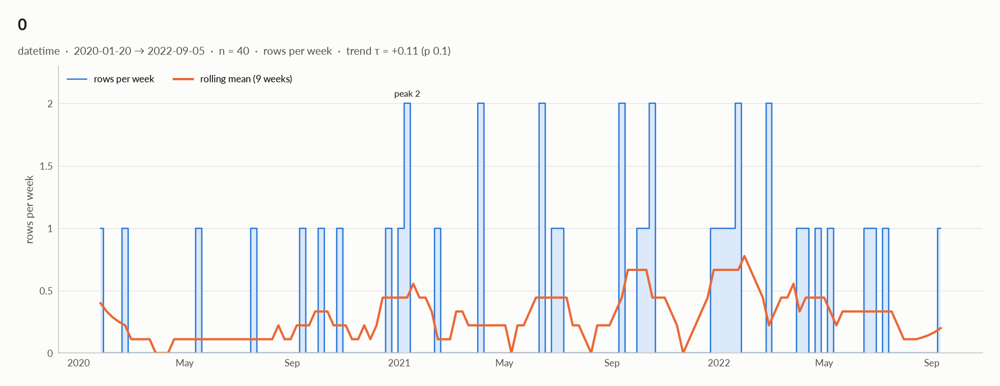

elessar report
40 rows × 3 columns · pandas.DataFrame · read in 0.0s · generated 2026-10-28 11:02 by elessar 0.3.0
Key findings Overall statistics Distributions Outliers Data quality Multivariate statistics Preparation plan Attribute statistics Run Key findings
MEDIUM feature: redundant with '2020-01-01 00:00:00' (eta +1.000) -> keep only oneMEDIUM feature: should-be-numeric: df['feature'] = pd.to_numeric(df['feature'], errors='coerce')Overall statistics
Rows 40 Columns 3 Memory 2.2 KB Potential saving 0 B Pandas dtypes object=1, datetime64[us]=1, period[M]=1 Semantic types numeric_continuous=1, datetime=1, categorical=1 Duplicate rows 0 (0.0%) Missing cells 0.0%
Numeric columns at a glance
column count missing mean std min median max skew kurtosis outliers best fit feature40 0.0% 0.04705 1.138 -2.401 0.1854 2.071 -0.541 -0.218 0.0% uniform(loc=-2.4, scale=4.47)
Categorical columns at a glance
column type count missing distinct most frequent share entropy 2020-01-01 00:00:00categorical 40 0.0% 40 2020-01 2.5% 1
Distributions
Normality is tested four ways (Shapiro-Wilk on up to 5,000 values, D'Agostino K², Jarque-Bera, Anderson-Darling); the verdict is 'not normal' when at least half of them reject at alpha 0.05. Every candidate distribution is fitted by maximum likelihood and ranked by AIC; the Akaike weight is its relative support among the candidates.
With thousands of values every test rejects even a good fit, so read KS D (the largest gap between the fitted and the observed cumulative distribution) as the size of the misfit: below 0.03 close, below 0.08 fair, above poor. KS p-values are optimistic since the parameters come from the same data. For integer columns the gap is measured on the integer support and the p-value comes from a chi-square goodness-of-fit test.
column n normality tests rejecting best fit parameters weight ΔAIC to 2nd KS D KS p shape feature40 normal 0 of 4 uniform loc=-2.4, scale=4.47 0.61 3.1 (normal) 0.189 (poor) 0.1 moderately left-skewed
Outliers
Three methods per numeric column: 3 sigma (|value - mean| > 3 standard deviations), boxplot (outside the Tukey fences Q1 - 1.5 IQR, Q3 + 1.5 IQR) and modified z (Hampel: |0.6745 (value - median) / MAD| > 3.5). A consensus outlier is flagged by at least two.
column 3 sigma boxplot modified z consensus fences action feature0 0 0 0 (0.0%) [-2.713, 2.969] keep
Data quality
severity column message medium featureredundant with '2020-01-01 00:00:00' (eta +1.000) -> keep only one medium featureshould-be-numeric: df['feature'] = pd.to_numeric(df['feature'], errors='coerce') info 2020-01-01 00:00:002 data items per cell joined by '-' (e.g. '2021-11') -> split into 2 columns
Multivariate statistics
Dimensionality reduction
PCA not applicable: needs at least 3 numeric columns and enough rows (1 columns, 40 rows)
Associations between columns
1 pairs tested, 0 significant after Benjamini-Hochberg correction (alpha 0.05).
Strongest associations
column A column B method value 95% CI n p_adj sig 2020-01-01 00:00:00 feature eta +1.000 40 0.47
Preparation plan
Cleaning: wrong formats 1. Transformation: decomposition 2, encode 1.
Cleaning
action column why code Wrong formats featureshould-be-numeric df['feature'] = pd.to_numeric(df['feature'], errors='coerce')
Transformation
action column why code Decomposition 0a date is not a feature: decompose into calendar parts d = pd.to_datetime(df['0'], errors='coerce')
df['0' + '_year'], df['0' + '_month'] = d.dt.year, d.dt.month
df['0' + '_dow'], df['0' + '_hour'] = d.dt.dayofweek, d.dt.hourDecomposition 2020-01-01 00:00:00several data items in one cell (2 parts joined by '-', e.g. '2021-11'): split them df[['2020-01-01 00:00:00_1', '2020-01-01 00:00:00_2']] = df['2020-01-01 00:00:00'].str.split('-', n=1, expand=True)Encode 2020-01-01 00:00:0040 labels: too many for one-hot; target encoding (cross-fitted) or frequency encoding df['2020-01-01 00:00:00'] = df['2020-01-01 00:00:00'].map(df['2020-01-01 00:00:00'].value_counts(normalize=True))
Attribute statistics
feature · numeric_continuousobject · numbers in object column: 40 distinct real values
Profile
type numeric_continuous dtype object values 40 missing 0 (0.0%) distinct 40 (100.0%) memory 1.2 KB
Center
mean 0.04705 95% CI of mean [-0.317, 0.4111] median 0.1854 95% CI of median [-0.5293, 0.6496] trimmed mean 0.1196 geometric mean - harmonic mean -
Spread
std 1.138 variance 1.296 sem 0.18 IQR 1.421 MAD 0.7182 CV 24.19 range 4.472
Quantiles
min -2.401 p1 -2.381 p5 -2.273 p25 -0.5824 p50 0.1854 p75 0.8383 p95 1.53 p99 2.04 max 2.071 sum 1.882
Shape
skewness -0.541 excess kurtosis -0.218 KDE modes 1 bimodality coef. 0.427
Outliers & counts
IQR fences [-2.713, 2.969] outside fences 0 (0.0%) |z| > 3 0 (0.0%) modified z > 3.5 0 (0.0%) zeros 0 negatives 14 infinite 0
Row order
monotonic no lag-1 autocorrelation 0.200 (p 0.21)
Normality: normal (n = 40)
test statistic p-value at alpha 0.05 Shapiro-Wilk 0.959 0.15 consistent with normal D'Agostino K² 2.178 0.34 consistent with normal Jarque-Bera 1.996 0.37 consistent with normal Anderson-Darling 0.554 0.15 consistent with normal
Best fits (continuous, 13 candidates fitted on 40 values)
# distribution parameters AIC ΔAIC weight BIC KS D KS p 1 uniform loc=-2.4, scale=4.47 123.821 0.0 0.61 127.198 0.189 (poor) 0.1 2 normal loc=0.0471, scale=1.12 126.875 3.1 0.13 130.253 0.136 (poor) 0.41 3 beta a=1.02, b=0.921, loc=-2.41, scale=4.48 127.625 3.8 0.09 134.38 0.154 (poor) 0.27
should-be-numeric : df['feature'] = pd.to_numeric(df['feature'], errors='coerce')0 · datetimedatetime64[us] · datetime dtype
Profile
type datetime dtype datetime64[us] values 40 missing 0 (0.0%) distinct 39 (97.5%) memory 320 B
Time
first 2020-01-20 last 2022-09-05 span 959 days 00:00:00 frequency ~16 days 00:00:00 (irregular) duplicated timestamps 1 in the future 0 before 1900 0 largest gap 88 days 00:00:00 (2020-02-19 → 2020-05-17) trend of rows per week tau +0.11 (p 0.1)
Rows by weekday: Mon 6, Tue 3, Wed 7, Thu 7, Fri 4, Sat 5, Sun 8 Rows by month: Jan 8, Feb 4, Mar 2, Apr 3, May 2, Jun 5, Jul 3, Sep 5, Oct 5, Dec 3 
2020-01-01 00:00:00 · categoricalperiod[M] · unrecognised dtype period[M], treated as labels
Profile
type categorical dtype period[M] values 40 missing 0 (0.0%) distinct 40 (100.0%) memory 320 B
Labels
cardinality 40 entropy 5.32 bits (1.00 of max) Gini impurity 0.975 imbalance ×1 rare labels 0 (0.0% of rows) uniform? chi² p 1
Run
Source pandas.DataFrame · read in 0.0s Processes 3 for the analysis, 3 for the charts (14 cores available) Time 1.2s (load 0.0s, columns 0.2s, associations 0.2s, quality 0.0s, charts 0.6s) Significance alpha 0.05, Benjamini-Hochberg false discovery rate per family of tests Versions elessar 0.3.0 · Python 3.12.14 · pandas 3.1.0 · numpy 2.5.4 · scipy 1.18.1